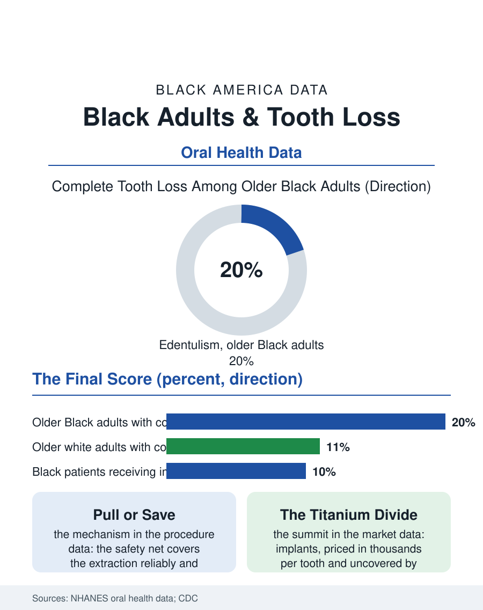

Black Public Health
The Count in the Mirror: Black Adults and Tooth Loss
Tooth loss is the lifetime score of dental access: extraction for the poor, restoration for the wealthy, implants at the summit. The tooth loss file.

Tooth loss is the dental file's final score, and it is kept in the open: by late middle age, Black adults have lost significantly more teeth than white adults on average, and complete tooth loss, edentulism, persists among older Black Americans at rates the national oral health surveys track at roughly double the white rate in some age bands. Behind the count stands the extraction-oriented history of dentistry for the poor. This article reads the tooth loss file.
Extraction's Long Shadow
The historical mechanism is economic and undisguised. For most of the twentieth century, the dentistry available to Black and poor patients was extraction dentistry: the aching tooth came out, because the root canal and crown that would save it cost multiples of the forceps, and the insurance and cash arithmetic of the dental safety net still tilts that way in the procedure data, where Medicaid's adult dental benefit, optional for states and thin where it exists, covers the extraction reliably and the restoration erratically. Each extraction raises the probability of the next, the bite's engineering redistributing force onto fewer teeth, so the mouth's decline accelerates like a bridge losing piers, and the average tooth count by age in the national examination surveys draws the two populations' curves diverging across adulthood from a childhood start that was nearly equal. The tooth count then becomes the summary statistic of a lifetime of dental access, which is why geriatric researchers use it as one: it predicts nutrition, since the toothless diet is the soft diet of the nutrition file; it predicts social participation and employability, the smile being a job interview instrument; and in the cohort studies it associates with cognitive decline and mortality itself, through inflammation and diet pathways the research continues to sort.
The Prosthetic Divide
What replaces the teeth is the file's second divide. The denture is the classic answer, and its technology divides by price into the acrylic set that rocks and the precision set that functions, with the fitting quality deciding whether the prosthesis is worn or drawer-kept, a distinction the nutrition data detect in the wearer's diet. Implants rewrote the summit: the titanium root that makes a replacement tooth a tooth again, priced per unit in the thousands, almost never covered by the public programs, and therefore distributed in the implant registries and market data as a near-perfect map of dental wealth, with Black patients receiving implants at a small fraction of the white rate relative to their tooth loss. The partial solutions, the implant-supported denture that anchors the classic prosthesis on two posts, are cost-engineering their way toward the middle of the market, and the dental schools' clinics, where Black patients are heavily represented in the patient mix, perform the file's quiet redistribution, supervised students placing restorations and the occasional implant at teaching prices. The workforce file completes the loop: the dentists and prosthodontists who would staff a restoration-oriented safety net are scarce in the neighborhoods where the extractions accumulated, for the reasons the dentist workforce data record.
Keeping the Teeth
The prevention file is the whole atlas in miniature. The teeth are lost to the two diseases of the dental record, caries and periodontal disease, both preventable, both treated earliest and cheapest in the populations with the least access, and the interventions that preserve dentition into old age are the ones already counted: the fluoride file, the hygienist's preventive chair, the sealant programs of the school years, the diabetes control that protects the gums in the metabolic file. The demographic stakes are rising with the longevity data: the generation now entering old age is the first Black generation to arrive there with a substantial share of its natural teeth in many cases, and the long-term care system's dental capacity, the nursing home file's documented weakness, will meet a population expecting to keep them. The tooth loss file closes in the mirror, where the count is taken daily by the only statistician who never misses a reading. A smile is data the whole world reads at a glance, which is what makes this file's numbers heavier than their clinical weight: they are visible in every photograph, every interview, every first impression of a long life, the accumulated record of every dental office that was or was not there. The surveys count the teeth. The mirror files the report.
More in Black Public Health
Hypertension Among Black Adults: Prevalence, Control, and Consequences
About 55 percent of Black adults have hypertension — the highest rate of any U.S. group. Prevalence, onset, control, and the stroke, heart, and kidney consequences in the data.
Diabetes Among Black Adults: Prevalence and Complications
Nearly one in five Black adults has diabetes, diagnosed or undiagnosed — and its complications fall with particular weight. The CDC data on prevalence, control, and outcomes.
Black Life Expectancy: The Gap at Birth and Its Causes
Black life expectancy at birth is about 73 years, roughly five years below the national figure — the summary measure of every health gap in this section. The CDC data.
Source: National Health and Nutrition Examination Survey (NHANES) oral health components; Centers for Disease Control and Prevention oral health surveillance.